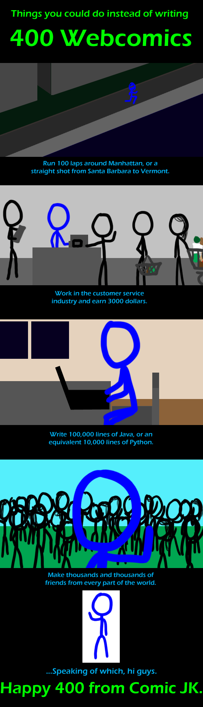

Comic JK 400
When I Feel Like It
⇤
<
?
>
⇥

⇤
<
?
>
⇥
Forum
.
RSS
.
Digg
.
Facebook
.
Reddit
.
Twitter
.
Stumbleupon
Hello! I love you :) Hi, and congratulations on your 400th. It's been fun to read. Congratulations man. :D Congrats Your mother is very proud, but no one else is. Comment deleted due to high douchiness levels. Don't be hating on web comic writers.. It's safe to assume it's not a very glamorous and high paying job. Yet we get a mint tech pun almost every day.. Cheers to you good sir! //stop censoring, you're no better than the trolls Why not do something productive with your life? <deleted insulting comment> //stupid censors... >because deep down you recognise that this site is - in its own small way - a good thing, and you hope it will have a positive effect on yourself... >>Because where else but the Internet could you insult someone without having to take any responsibility for what you say? You LOLLIPOPING lollipop. >>>Everywhere. >>>>He means insult someone without getting punched in the face. Whoo, swearing on the Internet! Because no one can make me stop, whoo! /sarcasm Achievement list? Something tells me he might have done those things. Well, except the running one. That would be silly. >If you run 5 miles/day, 300 days/year for two years you've got that distance. >>Yeah, but why would you do that? Walking or riding a bike is better. >>>Depends what you mean by better I guess... >>>>If nothing is chasing you, walking will get you farther before you tire. The bike will get you farther faster, so maybe you could turn around and come home. I am pleased to be one of thousands of friends. <3s to Comic JK--it's awesome! :) Very, very awesome. Oh, and hi. Python: 10 times more concise than java, but 10 times slower to code per line. > And 100 times longer to run per line (so 10 times slower execution) Things you could do instead of writing 400 web comics. "Comment on 1200 web comics." ..or trolling on 10000 Or do 1000 lines of coke >Or 100 lines of really good coke Yay for Santa Barbara! Hometown. <3